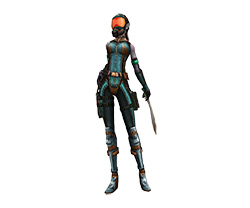

| 圖片 |
名字 |
說明 |
|  |
特種偵查兵(下士) |
Lv : 260
SPU負責偵查任務的搜索隊員。
身穿輕巧機能性高的服裝，主要使用短劍攻擊。 |
 |
特種偵查兵(上士) |
Lv : 260
SPU負責偵查任務的搜索隊員。
身穿輕巧機能性高的服裝，主要使用短劍攻擊。 |
|
特種偵察兵(少尉) |
Lv : 260
SPU負責偵查任務的搜索隊員。
身穿輕巧機能性高的服裝，主要使用雙短劍攻擊。 |
|
特種突擊兵(下士) |
Lv : 260
SPU負責遠距攻擊的支援部隊隊員。
穿著輕巧防彈材質的服裝，主要使用輕機關槍。 |
 |
特種突擊兵(少尉) |
Lv : 260
SPU負責遠距攻擊的支援部隊隊員。
穿著輕巧防彈材質的服裝，主要使用獵槍。 |
|
特種突擊兵(上尉) |
Lv : 260
SPU負責遠距攻擊的支援部隊隊員。
穿著輕巧防彈材質的服裝，主要使用衝鋒槍。 |
 |
特種破壞兵 |
Lv : 260
SPU部隊負責近戰的突擊隊隊員。
使用鈍器類武器進行攻擊。 |
|
特種異變兵 |
Lv : 260
法拉諾瓦進化實驗中因突發事件生成的物種。
介於人類和怪物之間，強化過後的雙手可撕裂一切。 |
|
變種怪力人 |
Lv : 260
巴洞居民因不小心受到異象產生的光線照射後，發生突變演化成像猩猩的變種人，擁有超乎常人想像的怪力。 |
 |
變種殭屍兵 |
Lv : 260
負責看守強化粒子加速器實驗發生異變後產生的殭屍守衛。
使用觸手上的手槍進行無差別射擊。 |
|
法拉諾瓦-亞斯娜 |
Lv : 300 (BOSS)
SPU偵察隊長，擅長使用雙刃對目標進行刺殺。 |
|
法拉諾瓦-破壞者 |
Lv : 300 (BOSS)
SPU負責遠距攻擊支援的隊長。 |
|
法拉諾瓦-莫特 |
Lv : 310 (BOSS)
SPU突擊隊長，負責近戰攻擊，某一次執行任務中失去
雙手，從此只能利用機械手臂活動。
在SPU部隊中擁有極高戰鬥力。 |
|
法拉諾瓦-重武裝 |
Lv : 350 (BOSS)
SPU的副隊長之一，乘坐APU(Armored Personal Unit)機械，使用APU搭載的重武器進行攻擊。 |
|
法拉諾瓦-里歐 |
Lv : 350 (BOSS)
SPU的副隊長之一，擁有強大的身體能量，以及
冷靜分析的戰術能力。 |